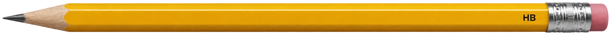

從日常描述走到共同尺度
透過觀察與操作理解概念01
為什麼要量？
把感覺變成可比較的資料只說「這支鉛筆很長」，別人怎麼知道它到底有多長？
「很長」是感覺，別人不一定和你想的一樣。測量能把觀察變成具體數字，讓結果可以說清楚、記下來，也能和別人比較。
先觀察
看起來很長
每個人的感覺可能不一樣，還不能公平比較。
02
讀懂紀錄
數值要有意義，還要說明單位18.2 代表什麼？
光看 18.2，還不知道量的是哪一種物理量，也不知道使用什麼單位。點選紀錄中的部分，再看完整描述。
長度=
18.2
cm
這筆紀錄量的是鉛筆的長度；18.2 是數值，cm 是長度單位。點選各部分，看看少了哪項資訊會讓紀錄難以理解。
同一段長度，可以用不同單位表示
鉛筆的長度固定；切換單位時，長度不變，數值會跟著換算。

18.2 cm目前以公分記錄。
換算關係：1 cm = 10 mm；100 cm = 1 m。 18.2 cm × 10 = 182 mm
03
挑選工具
物理量與量程都要合適同一種工具，能量所有東西嗎？
工具要能測量指定的物理量，也要有適合的量程。切換量測任務和工具情境，觀察工具的用途及限制。
30 cm 直尺・長度鉛筆約 18.2 cm，落在量程內
030 cm
量程是工具能測量的範圍。量程太短時，即使物理量相符，也無法完整量取；量程很大也不代表刻度一定夠細。
04
讀取刻度
觀察最小刻度尺上的每一格，代表多少？
共用模型中的尺顯示鉛筆端點。切換刻度間隔，觀察每格的長度以及端點相對於刻線的位置。
尺的一段：0 cm 至 1 cm改變每公分的分格數
共用模型中的尺已同步更新；鉛筆端點仍在相同位置。
1 cm 分成 10 個相等間隔，每個間隔是 0.1 cm（1 mm）。
橘色標記是固定的鉛筆端點；改變的是尺的刻線間距。
工具的最小刻度會限制可直接讀取的精細程度；讀值時先確認刻度標示和每格的間距。
05
刻線之間，怎麼估讀？
位置改變，估值跟著改變18.2 cm 再多一點，端點落在哪裡？
18.2 cm 就是 18 cm 2 mm。這支鉛筆的右端再多出一點，沒有剛好停在刻線上。按下「拉近查看」，放大 18.2 cm 與 18.3 cm 兩條刻線附近；拖動同一支鉛筆沿尺移動，觀察右端在兩條刻線之間的位置。鉛筆長度保持不變。
拉近能看清端點相對於刻線的位置；放大不會增加尺的刻度精度，也不代表得到絕對精確值。
物體端點不一定剛好對準刻線。讀值落在兩條刻線之間時，可以根據端點位置估一個值，這叫作「估讀」。畫面放大能幫助觀察位置，但不會讓尺的刻度變得更細。
06
找出讀值差異
視角與起點是兩種條件同一物體，為什麼讀值會差一點？
同一支鉛筆平行放在直尺旁，左端對齊 0 cm。拖曳 3D 場景改變觀察角度，紅色虛線從鉛筆右端投到尺面的位置，顯示這個視角下讀到的刻度；鉛筆本身的長度不會因轉動視角而改變。也可選取畫面後用方向鍵調整視角。
正在建立鉛筆 3D 模型。
鉛筆模型設定的長度約 18.2 cm 從這個角度讀到的數值約 18.2 cm
拖曳畫面旋轉視角；也可先選取畫面，再按方向鍵。
正對尺面時，視線延長線接近鉛筆端點；斜向觀察時，端點的視線落到尺面別處，這種因觀察角度不同而產生的讀值差異，叫作「視差」。這裡的讀值依照尺上刻度估讀。
07
改善量測條件
修正前後對照改變一個條件，量測會怎麼改善？
選擇一種量測限制，再操作對應的改善方式。觀察哪個條件被改變，以及資料因此如何更容易判讀。
正視刻度能減少視差；模型只呈現讀值條件的改變，不虛構精確誤差量。
改善方式要對應誤差來源。選用合適工具、對齊起點並保持一致讀法，能讓量測更可靠，但不能保證每次讀值完全相同。
08
整合理解
檢查看看是否理解
理解檢核・共 1 題
怎麼判斷鉛筆的兩筆長度紀錄是否可比較？
小安沿用共用模型，記下鉛筆長度約 18.2 cm；小晴也量同一支鉛筆，卻只記下「18.2」。哪一項說明最完整？
回到開頭的問題：比較量測資料時，先確認物理量、單位、工具和讀值條件，並用可對照的證據說明差異。